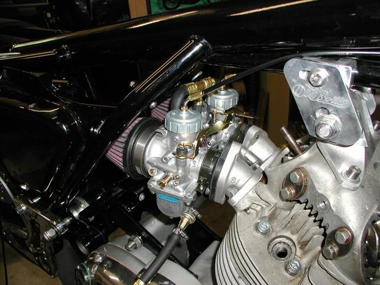
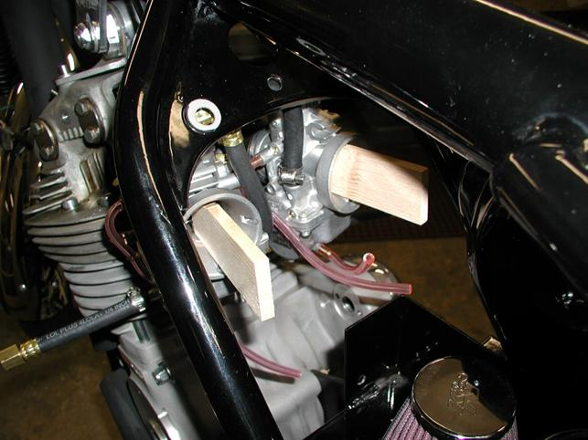
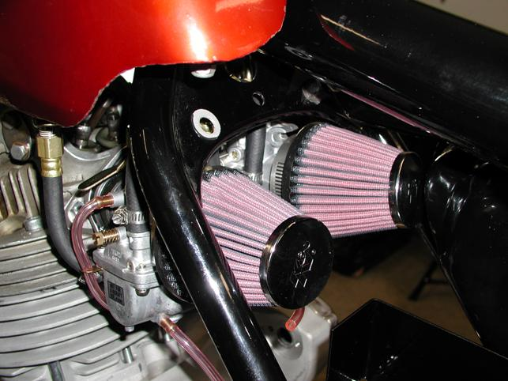

This article briefly describes how to convert a Commando from twin Amal carburetors to twin Mikuni carburetors. Since the 32mm and 34mm Mikuni carbs are fatter than the stock Amal carbs, manifolds that splay the carbs out from the center line are required. The Mikuni twin manifolds consists of two aluminum manifolds that bolt to the head and two rubber manifolds that mount between the aluminum manifolds and carbs.
Procedure:
- Mount the two studs, supplied with the manifolds, into the outside holes of the head. The two allen bolts thread through the two inside holes of the head.
- Mount and tighten up the two aluminum manifolds.
- Mount the two rubber manifolds to the aluminum manifolds.

Carbs mounted to a Commando. - Remove the tops of each carb.
- Using only the two throttle cables that fit into the carbs, thread the throttle cables through the 45º curved adjusters and into the carburetor slides.
- Replace the top of the carbs and tighten.
- Position the top carb 45º curved adjusters in the proper direction. Depending on how you are going to thread the throttle cables determines the proper direction of the adjusters.
- Fit carbs into the rubber manifolds
- Pull cables to lift slides and insert the spreaders.
We made a couple spreaders out of two pieces of wood, but anything that will keep the carb slides in the open, full throttle, position.

Carbs with wooden spacers. - Unscrew the black plastic splitter.
- Fit top cable through the splitter top and thread on the splitter slide.
- Fit bottom cables into the bottom half of the splitter and thread onto the splitter slide.
- Tighten the splitter.
- Take apart throttle housing.
- Fit cable into twist grip.
- Assemble throttle assembly on the bars.
- Remove spreaders from carbs.
- Adjust cables.
- Place K&N filters on carbs.
- Install fuel line as shown in pictures.

Final assembly. Since the Mikuni cars are splayed out from the center line, most air filters will interfere with the Commando frame. We have figured out a way of modifying K&N filters to fit correctly. Modifying K&N air filters for twin Mikuni carburetors.
Return to Old Britts home page …… Return to Technical Articles
This page was written and designed by F. H. Eaton & Associates if you have any questions or comments please contact us at info@fheaton.com